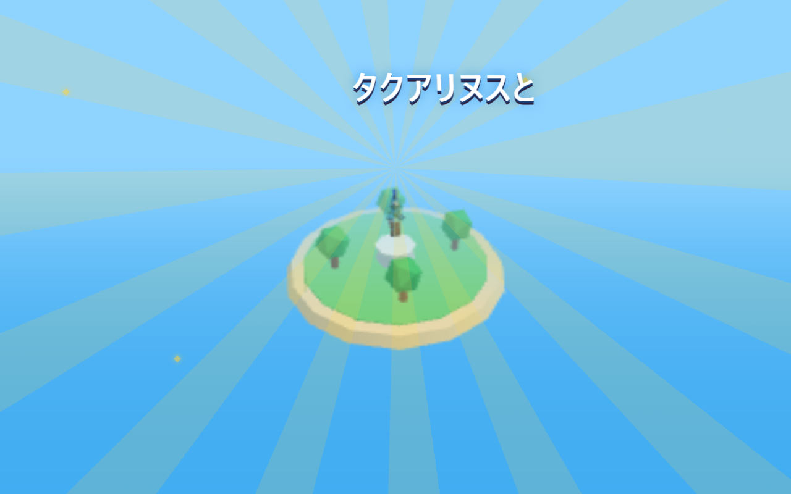
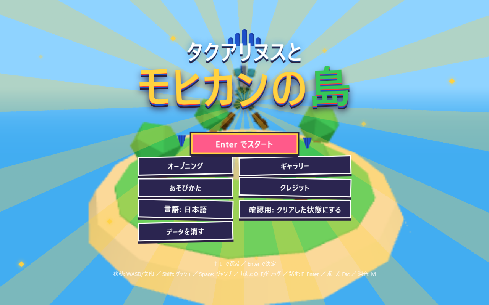
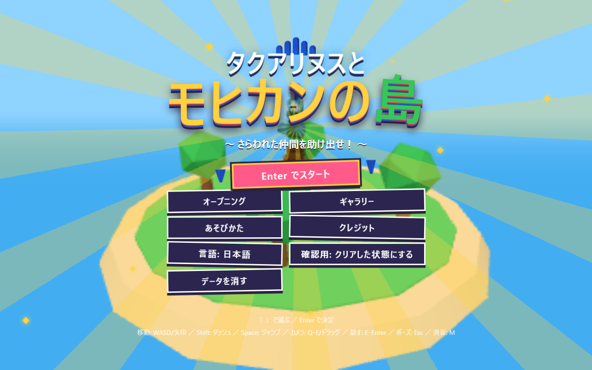
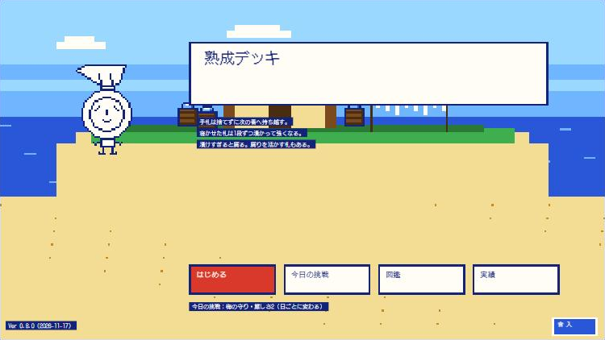
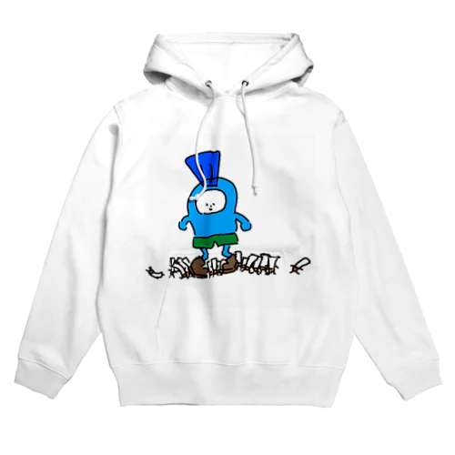
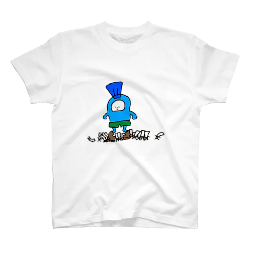
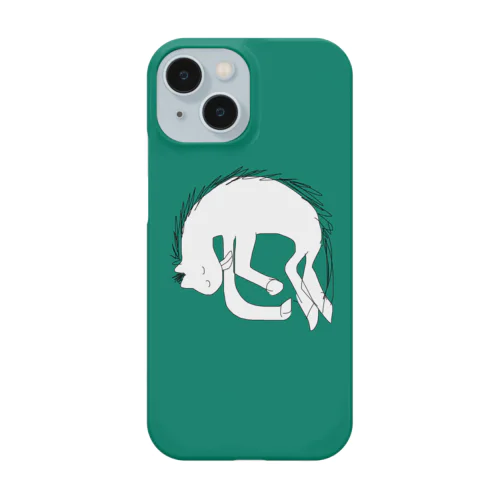
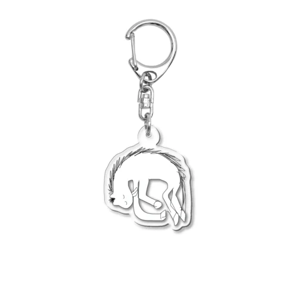
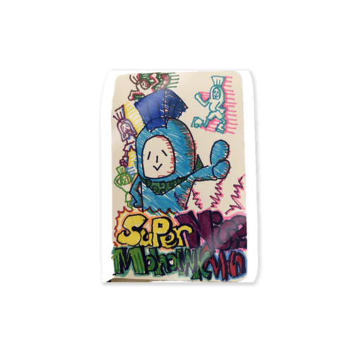
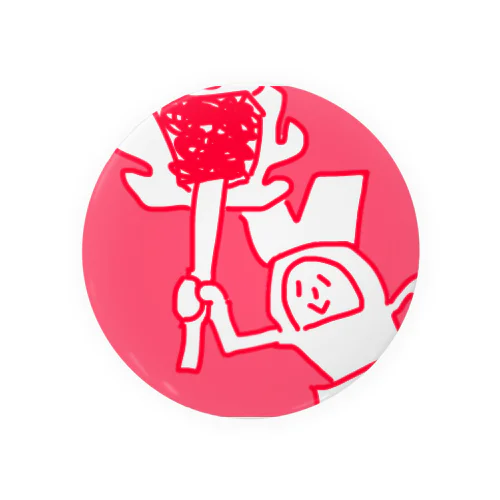

ようこそ
ここは タクアン の個人ホームページです。
VRChat の中で描いた絵、動く GIF、自作のゲーム、ゲーム実況、グッズを置いています。
まずは看板係の タクアリヌスのご挨拶 をどうぞ。
※ このサイトの文章は AI（Claude）が書いています。絵と GIF はタクアンの手描きです。文章がやけに丁寧だったり、ちょっとはしゃぎすぎていたりしたら、それは AI のせいです。
このサイトはリンクフリーです。相互リンクも歓迎。バナーは リンク集 にあります。
更新履歴
- 2026.11.17
- グッズ の欄に SUZURI の商品を並べました。リンク集 に VRChat の絵用の X（@mohawk_nice_guy）を足しました。
- 11月7日〜16日に描いた絵を 62 枚足しました。いま載っている絵は、トップ 199 枚・すべての絵 2,395 枚です。
- 昔のホームページ風に模様替えしました。カウンターを付けました。タクアリヌスのご挨拶 を置きました。
- 足あと帳、今日のタクアン占い、キリ番の証明書、ゲーム「熟成デッキ」を置きました。ほかにも小さな仕掛けがいくつかあります。
- 絵を 94 枚さげました。
- 2026.11.12
- お引っ越ししました。新しい住所は takuan-site.pages.dev です。
- 2026.11.07
- 開設！ 絵 202 枚、GIF 62 枚、ゲーム「タクアリヌスとモヒカンの島」を置きました。
絵
VRChat の中で描いた絵から選んだものです。日付と時刻は撮ったとき。押すと大きく見られます。
GIF
動く落書き。
ゲーム
   |
タクアリヌスとモヒカンの島主人公タクアリヌスが島をめぐり、番長たちとミニゲームで勝負してモヒカンを集める 3D アドベンチャー。パズル、レース、水鉄砲、将棋、格闘、ホラー、怪獣まで、館の絵に飛び込むと色んな遊びが待っています。 |
 |
熟成デッキ Ver 0.8.0札を漬けて育てるカードゲーム。札は番がたつほど漬かって強くなり、漬けすぎると腐ります。食べごろを見きわめて、樽の道具と漬け汁で 3 章の親分まで進みます。主人公はタクアリヌス。 |
ゲーム実況
YouTube チャンネル「タクアン」の新しい動画から順に流れます。
グッズ
SUZURI のショップ「タクアヌス屋モヒカン通り前」で、描いた絵をグッズにしています。押すと SUZURI の商品ページが開きます。

パーカータバコとヌス2
Tシャツヌスとタバコ
スマホケース青うま
アクリルキーホルダーうま
ステッカーグラフィティヌス
缶バッジ火を付けろヌス
商品の画像は SUZURI のショップから持ってきました。値段や色・サイズは商品ページで見てください。
リンク集
| 行き先 | ひとこと |
|---|---|
| X | @Takuan13571113。いつものアカウント。日々のつぶやきなど。 |
| X（VRChat の絵） | @mohawk_nice_guy。VRChat の中で描いた絵を載せる用。 |
| pixiv | 絵の置き場。 |
| YouTube | ゲーム実況。 |
| SUZURI | グッズのお店。 |